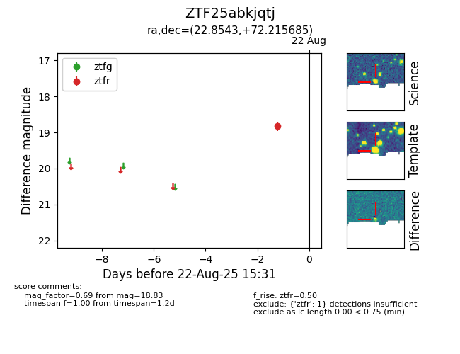

Target ZTF25abkjqtj at 2025-08-22 16:16, see:
FINK: fink-portal.org/ZTF25abkjqtj
Lasair: lasair-ztf.lsst.ac.uk/objects/ZTF25abkjqtj
ALeRCE: alerce.online/object/ZTF25abkjqtj
alt names
ZTF25abkjqtj (ztf,alerce)
coordinates:
equatorial (ra, dec) = (22.8543,+72.21569)
galactic (l, b) = (126.0137,+9.58357)
photometry
last ztfr=18.83
1 ztfr detections
